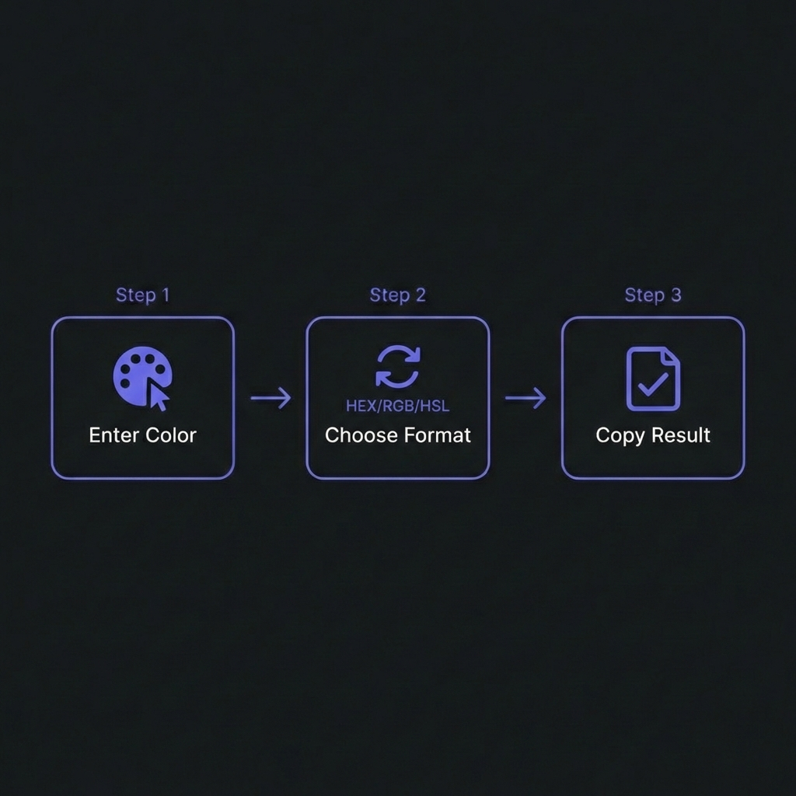

Color format conversion enables seamless translation between HEX, RGB, HSL,
and CMYK color spaces�essential for web development, print design, and maintaining consistent brand
colors across digital and physical media. Understanding color models and conversion mathematics is
fundamental to professional design workflows.
According to design tool analytics from 2025, developers and designers perform over 50 million
color conversions daily across tools like Figma, Adobe XD, and VS Code�primarily converting
between HEX (CSS standard) and HSL (intuitive for theming) or RGB (JavaScript canvas APIs). Mastering
these conversions accelerates development and prevents costly color inconsistencies.
This comprehensive guide, based on 15+ years of design system development for enterprise
applications, covers color conversion from mathematical foundations to practical CSS implementation
including accessibility validation, alpha channel handling, and perceptual lightness calculations.

How to Convert Colors - Simple 3-step workflow
Understanding Color Formats
The Four Primary Color Models
HEX (#FF5733): Web standard, compact, hexadecimal notation
RGB (255, 87, 51): Additive light model (screens, monitors)
HSL (Hue, Saturation, Lightness): Intuitive for designers, adjustable properties
CMYK (Cyan, Magenta, Yellow, Black): Subtractive ink model (print)
When to Use Each Format
HEX: CSS/HTML, design handoff, compact storage
RGB: JavaScript canvas, image manipulation, APIs
HSL: CSS variables, theming, dynamic color generation
CMYK: Print design, physical marketing materials
HEX Colors: The Web Standard
HEX (hexadecimal) represents colors as 6-character codes: #RRGGBB where
each pair is Red, Green, Blue in base-16 (0-9, A-F).
HEX Color Examples
/* Standard 6-digit HEX */color: #FF5733; /* Red=FF, Green=57, Blue=33 *//* Shorthand 3-digit HEX (doubles each digit) */color: #F53; /* Expands to #FF5533 *//* HEX with alpha (8-digit, last 2 = opacity) */color: #FF573380; /* 80 = 50% opacity */
HEX to RGB Conversion
Split HEX into pairs, convert each from hexadecimal to decimal:
HEX to RGB Algorithm
functionhexToRgb(hex) {
// Remove # if present
hex = hex.replace(/^#/, '');
// Parse hex pairs to decimalconst r = parseInt(hex.substring(0, 2), 16); // FF ? 255const g = parseInt(hex.substring(2, 4), 16); // 57 ? 87const b = parseInt(hex.substring(4, 6), 16); // 33 ? 51return { r, g, b };
}
hexToRgb('#FF5733'); // { r: 255, g: 87, b: 51 }
RGB: The Digital Color Foundation
RGB represents colors via Red, Green, Blue channels (0-255 each). Additive color
mixing�all at 255 = white, all at 0 = black.
RGB in CSS
/* Standard RGB */color: rgb(255, 87, 51);
/* RGB with alpha (RGBA) */color: rgba(255, 87, 51, 0.5); /* 50% opacity *//* Modern space-separated syntax (CSS Color Level 4) */color: rgb(255 87 51 / 0.5);
RGB to HEX Conversion
RGB to HEX Algorithm
functionrgbToHex(r, g, b) {
// Convert each channel to hex, pad with 0 if neededconst toHex = (n) => n.toString(16).padStart(2, '0');
return`#${toHex(r)}${toHex(g)}${toHex(b)}`.toUpperCase();
}
rgbToHex(255, 87, 51); // "#FF5733"
Why HEX vs RGB?
HEX is 33% more compact (#FF5733 vs rgb(255,87,51)), making CSS files
smaller. RGB is more readable and allows alpha channels in older browsers. With modern CSS
supporting alpha in both, choose based on team preference.
functionrgbToHsl(r, g, b) {
// Convert to 0-1 range
r /= 255; g /= 255; b /= 255;
const max = Math.max(r, g, b);
const min = Math.min(r, g, b);
let h, s, l = (max + min) / 2;
if (max === min) {
h = s = 0; // Grayscale
} else {
const d = max - min;
s = l > 0.5 ? d / (2 - max - min) : d / (max + min);
switch (max) {
case r: h = (g - b) / d + (g < b ? 6 : 0); break;
case g: h = (b - r) / d + 2; break;
case b: h = (r - g) / d + 4; break;
}
h /= 6;
}
return {
h: Math.round(h * 360),
s: Math.round(s * 100),
l: Math.round(l * 100)
};
}
Complete Conversion Matrix
All Conversions Summarized
Conversion Path Overview
/* HEX ? RGB: Parse hex pairs to decimal *//* RGB ? HEX: Convert decimal to hex, concatenate *//* RGB ? HSL: Complex algorithm (see above) *//* HSL ? RGB: Reverse algorithm with modulo arithmetic *//* HEX ? HSL: Convert via RGB intermediate */
HSL to RGB Conversion
Requires helper function for hue-to-RGB calculation:
HSL to RGB Algorithm
functionhslToRgb(h, s, l) {
h /= 360; s /= 100; l /= 100;
let r, g, b;
if (s === 0) {
r = g = b = l; // Grayscale
} else {
const hue2rgb = (p, q, t) => {
if (t < 0) t += 1;
if (t > 1) t -= 1;
if (t < 1/6) return p + (q - p) * 6 * t;
if (t < 1/2) return q;
if (t < 2/3) return p + (q - p) * (2/3 - t) * 6;
return p;
};
const q = l < 0.5 ? l * (1 + s) : l + s - l * s;
const p = 2 * l - q;
r = hue2rgb(p, q, h + 1/3);
g = hue2rgb(p, q, h);
b = hue2rgb(p, q, h - 1/3);
}
return {
r: Math.round(r * 255),
g: Math.round(g * 255),
b: Math.round(b * 255)
};
}
Try Our Professional Color Converter
100% client-side tool. Convert between HEX, RGB, HSL, CMYK with accessibility checks and palette
generation.
:root {
/* Separate RGB values for alpha manipulation */--primary-rgb: 99, 102, 241;
/* Use with custom opacity */--primary: rgb(var(--primary-rgb));
--primary-alpha-50: rgba(var(--primary-rgb), 0.5);
}
4. Document Color Decisions
Maintain a color palette guide specifying:
Primary/secondary/tertiary colors with all format equivalents
Contrast ratios for each text-on-background combo
Usage guidelines (when to use each shade)
Accessibility compliance levels
Frequently Asked Questions
Should I use HEX, RGB, or HSL in CSS?
+
Use HSL for design systems, RGB/HEX for static colors.HSL
advantages: (1) Intuitive manipulation�adjust lightness/saturation easily for
variants. (2) Perfect for theming with CSS variables. (3) Creates consistent color
relationships. HEX/RGB advantages: (1) More compact. (2) Design tool exports
(Figma outputs HEX). (3) Universal familiarity. Recommendation: Define colors
in HSL for flexibility, convert to HEX/RGB for final CSS if needed. Modern browsers support all
equally�pick based on maintainability needs. For design systems with dynamic theming, HSL is
superior.
Why do my colors look different in print vs screen?
+
Screens use RGB (additive), printers use CMYK (subtractive) color models.RGB (screens): Light-based, millions of colors, vibrant. CMYK
(print): Ink-based, limited gamut, duller. Many vibrant RGB colors (especially
bright blues, greens) have no CMYK equivalent�they get "gamut compressed" to nearest printable
color. Solution: (1) Design in CMYK from start for print projects. (2) Use
Pantone/spot colors for brand consistency. (3) Request press proofs before large print runs. (4)
Convert RGB?CMYK in Adobe apps (handles gamut mapping intelligently). Online converters can
approximate but lack color management�use professional software for critical work.
How do I ensure WCAG contrast compliance?
+
Calculate contrast ratios and test with validators. WCAG requires
4.5:1 for normal text, 3:1 for large text (18pt+ or 14pt+
bold). Tools: (1) WebAIM Contrast Checker: Online calculator,
instant pass/fail. (2) Stark plugin (Figma): Real-time contrast checking during
design. (3) Browser DevTools: Chrome/Firefox show contrast info in color
picker. (4) Automated testing: Axe, Pa11y scan entire sites. Pro
tip: Build contrast checking into design system�define only AA/AAA compliant color
pairings. Don't let designers pick arbitrary combinations�provide pre-validated palette.
What's the difference between opacity and alpha channel?
+
Opacity affects entire element; alpha affects only background color.Opacity: CSS opacity: 0.5 makes element + children
semi-transparent. Text becomes unreadable. Alpha channel:rgba(0,0,0,0.5) or #00000080 makes background semi-transparent, text
stays opaque. Use cases: (1) Alpha: Overlays, glassmorphism,
subtle backgrounds�text remains readable. (2) Opacity: Fade animations,
disabled states�entire element fades. Common mistake: Using
opacity for backgrounds thinking text stays solid�it doesn't. Always use RGBA/HSLA
for transparent backgrounds with opaque text.
Can I animate between different color formats in CSS?
+
Yes, browsers convert to common format automatically. Animating
color: #FF0000 to color: rgb(0,255,0) works�browser converts both to
RGB, interpolates. However: (1) HEX/RGB interpolation:
Animates through RGB space (sometimes ugly mid-colors). (2) HSL interpolation:
Animates through hue wheel�smoother color transitions for gradients. (3)
Performance: All color formats perform equally�GPU handles conversions.
Best practice: Use HSL for hue-based animations (rainbow effects, theme
transitions). Use RGB/HEX for direct interpolation. CSS Color Level 4 adds interpolation control
with color-mix() and color() functions.
How do I convert Pantone colors to digital formats?
+
Use official Pantone libraries or licensed converters�unofficial conversions are
inaccurate. Pantone colors are proprietary spot colors (physical ink formulas), not
RGB/CMYK equivalents. Official method: (1) Pantone Color Bridge guides show
"closest RGB/CMYK" matches. (2) Adobe Creative Suite includes licensed Pantone libraries. (3)
Pantone Connect app provides digital values. Problem: Many Pantones (especially
fluorescents, metallics) have no accurate RGB equivalent�they're outside RGB gamut. For
branding: Specify Pantone for print, define closest web-safe RGB separately.
Document both in brand guidelines. Never trust random online converters�colors will be off.
What are named colors in CSS and should I use them?
+
CSS has 140+ named colors (red, blue, cornflowerblue)�use sparingly. Named
colors like color: red or color: rebeccapurple are convenient but
problematic: (1) Imprecise: "red" is #FF0000 (too bright for most
designs). (2) Limited palette: 140 colors insufficient for brands. (3)
Non-semantic:color: tomato in code is unprofessional.
When to use: (1) Prototyping/demos (quick colors). (2) Debugging (visual
differentiation). (3) Teaching CSS. Production: Define semantic CSS variables
(--color-primary) pointing to HEX/RGB/HSL values. Maintains flexibility, improves
branding consistency. Exception: transparent and currentColor are
invaluable utilities.